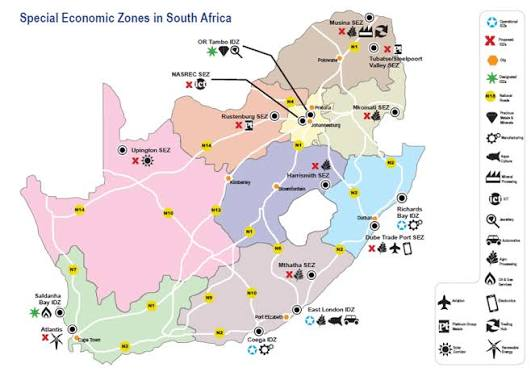

Geographically designated areas set aside for targeted economic activities, offering investors sector-specific infrastructure, preferential tax rates, and a coordinated government facilitation environment. Named tenant investments are logged below and on the SAWEM map / tables.

South African Special Economic and Industrial Development Zones. Source: the dtic, "South Africa's Special Economic Zones" brochure (2021).
The South African Government seeks to transform the economy into a globally competitive industrial economy. One of the critical tools for accelerating the country's industrial development agenda is the Special Economic Zone (SEZ) Programme, mandated by the SEZ Act (Act 16 of 2014), proclaimed on 9 February 2016.
SEZs are a tool to help:
There are currently 13 designated SEZs under the SEZ Act 16 of 2014. Namakwa (Aggeneys) was designated on 21 May 2024; Fetakgomo-Tubatse (Steelpoort) was designated on 22 May 2026 (GN 7506, GG 54718). Platinum Valley (Bojanala) remains an application / pending designation. Coega is the largest zone (9 003 ha, 14 campuses plus the NMBLP VW supplier park in Kariega) and published 59 named operational investors in 2026.
Designation under the SEZ Act gives access to serviced industrial land, an operator, and (where proclaimed) a Customs Controlled Area. The 15% corporate rate is a separate Finance-Minister approval under s12R of the Income Tax Act — it is not automatic for every designated zone. Since GG 41758 of 6 July 2018 the six s12R zones are Coega, Dube TradePort, East London IDZ, Maluti-a-Phofung, Richards Bay IDZ and Saldanha Bay. Atlantis, OR Tambo, TASEZ, Nkomazi, Musina-Makhado, Namakwa and Fetakgomo-Tubatse sit at the standard 27% rate unless a new s12R gazette is issued.
Coega CDC's investor incentives page packages the national instruments as follows (coega.co.za/site/sez-investments/incentives):
| Incentive | What it means |
|---|---|
| 15% preferential corporate tax (s12R) | Qualifying companies in the six gazetted s12R zones pay 15% instead of 27%. Coega is one of those six. TASEZ, Atlantis, OR Tambo, Nkomazi, MMSEZ, Namakwa and FTSEZ do not currently carry the rate. |
| Building allowance (s12S) | Accelerated allowance on new and unused buildings used for qualifying trade inside a designated SEZ (typically 10% a year), lowering the net cost of constructing or improving facilities. |
| Employment Tax Incentive | A cost-sharing arrangement with government that reduces the cost of hiring young and first-time workers, available nationwide and used heavily inside SEZs. |
| Customs Controlled Area (CCA) | Duty-free importation of production-related raw materials, machinery and assets, plus VAT relief on qualifying CCA supplies — the main working-capital incentive for export manufacturers. Coega's one-stop shop (OSISC) administers CCA with SARS. |
| SEZ Fund / infrastructure | dtic SEZ Fund top-up for bulk infrastructure and, in some zones, top-structure support (e.g. Atlantis Quantum V3 sod-turning April 2025). |
Each incentive has its own qualifying tests in the SEZ Act, the Income Tax Act (s12R / s12S), the Employment Tax Incentive Act, and the Customs Duty Act. CDC also runs an on-site investor one-stop shop.
| Zone | Province | Focus sectors |
|---|---|---|
| Coega SEZ | Eastern Cape | South Africa's largest SEZ (9,003 ha) adjacent to the deep-water Port of Ngqura — metals, automotive, agro-processing, aquaculture, chemicals, logistics, BPO, energy and maritime. |
| East London IDZ (ELIDZ) | Eastern Cape | One of South Africa's first IDZs, UNIDO-recognised Eco-Industrial Park — automotive components, agro-processing, aquaculture, advanced manufacturing, green technology, digital economy, BPO. |
| Saldanha Bay IDZ | Western Cape | South Africa's only sector-specific SEZ and the only one located within a port — oil and gas, marine repair, maritime fabrication and engineering, logistics (operates as a freeport within the deepest natural port in the southern hemisphere). |
| Atlantis SEZ | Western Cape | Africa's only Greentech SEZ, 40km from Cape Town — renewable energy manufacturing (wind, solar), energy storage, e-mobility, recycling and waste management, advanced materials, green building materials. |
| Dube TradePort SEZ | KwaZulu-Natal | Adjacent to King Shaka International Airport — aerospace, electronics, medical devices and pharma, clothing and textiles, automotive components, logistics. The Dube AgriZone specialises in perishables, horticulture, aquaculture and floriculture. |
| Richards Bay IDZ (RBIDZ) | KwaZulu-Natal | Linked to the deep-water Port of Richards Bay — metals beneficiation (aluminium, iron ore, titanium), renewable energy, agro-processing, marine industry development, ICT. Aims to become SA's primary energy hub for LNG and green energy. |
| OR Tambo SEZ | Gauteng | Multi-precinct SEZ at OR Tambo International Airport — jewellery and diamond beneficiation, precious metals processing, pharmaceuticals, electronics, agro-processing. The Springs Precinct targets logistics and supply chain. |
| Tshwane Automotive SEZ (TASEZ) | Gauteng | Africa's first automotive city — OEM supply chains, automotive component manufacturing and assembly, and new energy vehicle (NEV) production. |
| Maluti-a-Phofung SEZ (MAPSEZ) | Free State | Multi-sector SEZ on the N3 corridor between Johannesburg and Durban — light and heavy manufacturing, logistics and warehousing, cross-docking, vehicle distribution, automotive supply, agro-processing, chemical blending. |
| Platinum Valley SEZ (Bojanala) | North West | Bojanala Platinum District, the western limb of SA's platinum belt (~40% of world platinum production) — PGM beneficiation, fuel cells and hydrogen technology, platinum recycling, autocatalyst manufacture, mining capital equipment, renewable energy, agro-processing. Pending designation — not yet gazetted. |
| Musina-Makhado SEZ (MMSEZ) | Limpopo | Two-site zone on the N1 corridor — North Site (near Musina): light manufacturing, agro-processing, cold storage, logistics leveraging the Beitbridge border. South Site (near Makhado): metallurgical and mineral beneficiation including ferrochrome, ferromanganese and titanium. Currently implementing a turnaround plan. |
| Nkomazi SEZ | Mpumalanga | Border town of Komatipoort on the Maputo Development Corridor — agro-processing of citrus, subtropical fruits and aromatic plants, nutraceuticals, logistics and freight, alternative energy including gas-to-power. |
| Namakwa SEZ | Northern Cape | Aggeneys, designated 21 May 2024 (1 270 ha). Northern Cape's first SEZ — zinc/lead smelting and mineral beneficiation anchored by Vedanta's Gamsberg mine and planned smelter, plus manufacturing, agro-processing and renewables. |
| Fetakgomo-Tubatse SEZ (FTSEZ) | Limpopo | Steelpoort, Sekhukhune District — PGM, chrome and vanadium beneficiation, mining inputs, green energy, agro, automotive supply. Designated 22 May 2026 (GN 7506, GG 54718), 1 010 ha between Samancor and Lion Ferrochrome. Pipeline 46 companies / ~R52.6 bn. |
Across South Africa's SEZs, a consistent pattern emerges: purpose-built industrial platforms, deep integration with ports and airports, and preferential access to AfCFTA and SADC markets. These zones are not speculative projects but functioning ecosystems with established tenants, supply chains and logistics performance.
The zones are concentrated in strategic locations — deep-water ports (Coega, Saldanha Bay, Richards Bay), international airports (OR Tambo, King Shaka), and key freight corridors (N1, N2, N3, N4) — positioning them as the location of choice for investment in mineral beneficiation, agro-processing, automotive, green technology and petrochemical industries.
Consuming-entity pins on the SAWEM Load overlay. Named SEZ tenants (CDC Our Investors and other operator lists) sit with OEM plants, parks and logistics offtake. Hover a pin for sector, load and status. Generation stays on Plants.
Operational capex and investor counts are zone-level published totals (CDC / Stats SA / GIBS / operator reports). Named tenants in the ledger can be fewer than the zone total where the operator has not published a full list.
| Zone | Province | s12R 15% | Status | Land (ha) | Operational investors | Operational capex | Jobs | Named in ledger |
|---|
One row per named tenant or pipeline asset. Filter by zone. Electricity consumers from this list also sit in SAWEM Tables → Load · Consuming Entities (one row per unique offtake; unpublished MW is blank).
| Zone | Investor / asset | Sector | Capex | Country | Status | Notes |
|---|